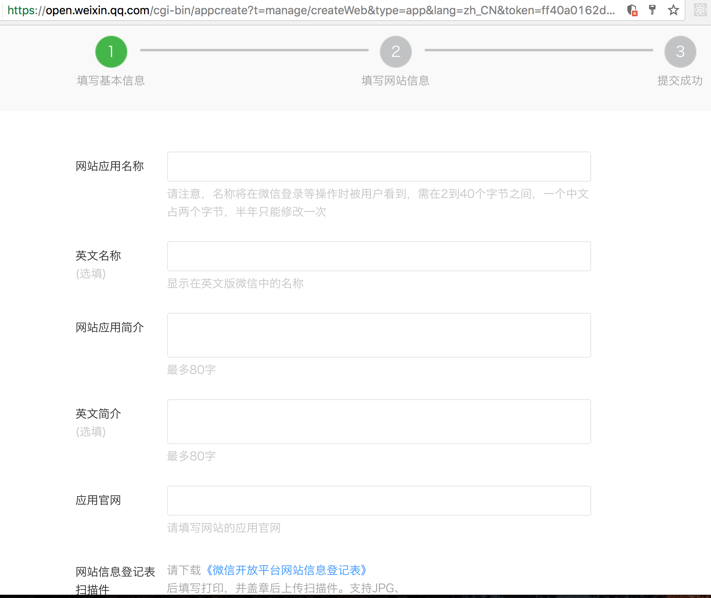
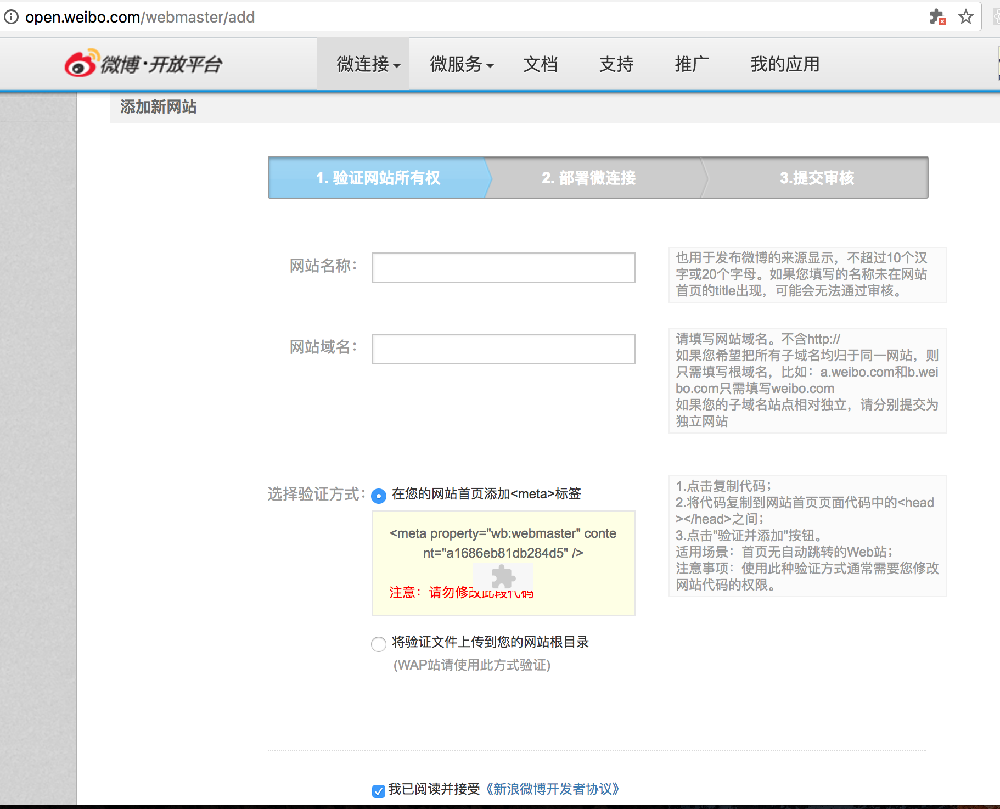
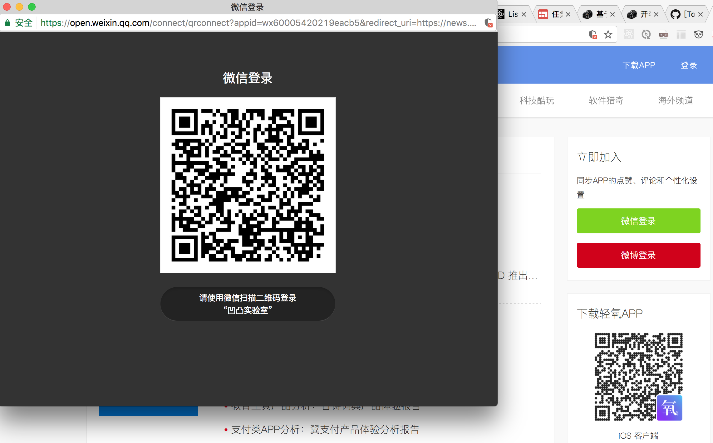

你是否在对第三方 oAuth2.0的整个授权流程感到迷惑？或者对某一个步骤该放在前端还是后端感到困惑？本文将带你揭开整个oAuth2.0授权登录的谜底。
在国内，oAuth2.0 的使用场景很多，比如最典型的是应用内的第三方授权登录（如微信、微博、QQ等）。通常，按照平台的不同，在第三方的开放平台申请接入自己应用的时候，会有不同的选项，如APP版本，Web版本等。
本文主要讨论基于Web版本的应用授权登录。
申请创建应用
前往第三方开放平台申请账号（「微信」 | 「微博」)。
在微信开放平台的「网站应用」中，选择 创建网站应用 ，之后根据页面提示填写完相关的内容，最后等待微信官方审批完成即可。

微博同理，在首页中选择「网站应用」之后，选择「立即接入」，然后按照流程填写完资料即可。

在微博「验证网站所有权」这一步，可能会出现无论怎么验证都无法通过的问题。这时候，可以前往 「这里」 去手动进行申请验证。
授权处理
申请完成并通过审核后，你会获得一个应用的AppID（微博是APP Key）和AppSecret。至此，你将可以使用这两个参数进行授权登录的开发。
授权的第一步是需要弹出一个新窗口（或其他方式，但一般都是这么实现）。新窗口的URL参数按如下代码配置：
1 2 3 4 5 6 7 8 9 10 11 12 13 14 15 16 17 18 19 20 21 22 23 24 25
| import {WECHAT, WEIBO} from 'Constants' export function oAuthLogin(type = 'wechat') { let authUrl = 'https://open.weixin.qq.com/connect/qrconnect' + `?appid=${WECHAT.APPID}&redirect_uri=${location.origin}/api/oauth/login` + '&response_type=code&scope=snsapi_login&state=weixin#wechat_redirect' if (type === 'weibo') { authUrl = 'https://api.weibo.com/oauth2/authorize' + `?client_id=${WEIBO.APPID}&response_type=code&redirect_uri=${location.origin}/api/oauth/login&state=weibo` } const windowOptions = 'toolbar=yes, location=yes, directories=no, status=no,' + ' menubar=yes, scrollbars=yes, resizable=no, copyhistory=yes, width=800, height=600' const childWindow = window.open(authUrl, "_blank", windowOptions) const timer = setInterval(() => { if (childWindow.closed) { clearInterval(timer) window.location.reload() } }, 500) }
|
上面的代码中，主要关注 redirect_uri 这个参数，这个参数的值必须要和在网站信息中填写的回调地址一样，否则会造成授权验证失败，页面无法打开的问题。上面的 timer 是为了实现授权登录成功，在授权窗口关闭后，将当前页面刷新，显示用户的信息等。至于这个窗口何时会关闭，下面会有提及。
有了这个打开授权窗口的函数，只需要在相关的UI如Button中绑定这个函数，当用户点击相关的UI中，执行这个函数即可。

当用户在这个页面登录后，将会跳转到 redirect_uri 中填写的页面中。在这里，因为目前我使用Vue2做的同构应用，所以我在 redirect_uri 中填写的是一个服务端的中转页面，该页面如下：
1 2 3 4 5 6 7 8 9 10 11 12 13 14 15 16 17 18 19 20 21 22 23 24 25 26 27 28 29 30 31 32 33 34 35 36 37 38 39 40 41
| // oauth.ejs <!DOCTYPE HTML> <html> <head> <title>轻氧授权登录</title> <link rel="shortcut icon" href="data:image/x-icon;," type="image/x-icon"> </head> <body> <div class="oauth-result"> <p>授权<%= result.message %></p> <p id="J_authData" style="display: none"><%= result.data %></p> <p><span class="seconds-count" id="J_seconds">3</span>秒后<a href="/">跳转</a></p> </div> <script type="text/javascript"> var authData = document.querySelector('#J_authData').textContent if (authData) { window.localStorage.setItem('user', authData) } if ("<%= result.message %>" === '成功') { try { window.close() } catch(e) { window.location.href = "/" } } else { var timer = setInterval( function() { if (document.querySelector('#J_seconds').textContent == '1') { try { window.close() } catch(e) { window.location.href = "/" } } else { document.querySelector('#J_seconds').textContent -= 1 } }, 1000) } </script> </body> </html>
|
也就是说，当用户从弹出的窗口登录后，将会跳转到这个页面，在这个页面输出之前，服务端会完成剩余的授权工作。这部分的授权工作包括：
- 从扫码登录跳转的RUL上，拿到code参数，通过code获取acess_token
- 通过access_token拿到用户的基本信息，然后入库保存
- 渲染授权
成功/失败 页面，3秒后关闭弹出的窗口，回到主页刷新
微信授权主要逻辑如下：
1 2 3 4 5 6 7 8 9 10 11 12 13 14 15 16 17 18 19 20 21 22 23 24 25 26 27 28 29 30 31 32 33 34 35 36
| const axios = require('axios') // 精简了属性验证的逻辑 router.get('/oauth/login', (req, res, next) => { const url = 'https://api.weixin.qq.com/sns/oauth2/access_token?' + `appid=${config.wechat.APPID}&secret=${config.wechat.appSecret}&code=${code}&grant_type=authorization_code` axios.get(url) .then(resp => { // 获取acess_token const data = resp.data const authData = { openid: data.openid, access_token: data.access_token, expires_in: data.expires_in } return Promise.resolve(authData) }) .then(authData => { const urlForUserInfo = 'https://api.weixin.qq.com/sns/userinfo?' + `access_token=${authData.access_token}&openid=${authData.openid}` return axios.get(url) }) .then(resp => { // 得到了用户信息 const userInfo = resp.data // 用户信息 // 保存到数据库 ... // 渲染成功页面 // result可能是你保存到数据库后返回的数据，或者直接是userInfo，或其他 res.render('oauth', {result: {message: '成功', data: JSON.stringify(result)}}) }) .catch(err => { res.render('oauth', {result: {message: '失败', data: err}}) }) })
|
微博的授权逻辑基本差不多，只有一些字段的差异：
1 2 3 4 5 6 7 8 9 10 11 12 13 14 15 16 17 18 19 20 21 22 23 24 25 26 27 28 29 30 31 32 33 34 35 36 37
| const axios = require('axios') router.get('/oauth/login', (req, res, next) => { const url = url = 'https://api.weibo.com/oauth2/access_token?' + 'client_id=4276458591&client_secret={config.weibo.clien_secret}&grant_type=authorization_code' + `&redirect_uri=${baseURL}/api/oauth/login&code=${code}` axios.post(url) .then(resp => { // 获取授权信息。注意，这里是post const data = resp.data const authData = { uid: data.uid, access_token: data.access_token, expiration_in: data.expires_in } return Promise.resolve(authData) }) .then(authData => { const urlForUserInfo = 'https://api.weibo.com/2/users/show.json?uid=' + `${authData.uid}&access_token=${authData.access_token}` return axios.get(url) }) .then(resp => { const userInfo = resp.data // 得到授权信息 // 保存到数据库 ... // 渲染成功页面 // result可能是你保存到数据库后返回的数据，或者直接是userInfo，或其他 res.render('oauth', {result: {message: '成功', data: JSON.stringify(result)}}) }) .catch(err => { res.render('oauth', {result: {message: '失败', data: err}}) }) })
|
至此，整个授权流程完毕。
BY：开车上纽北